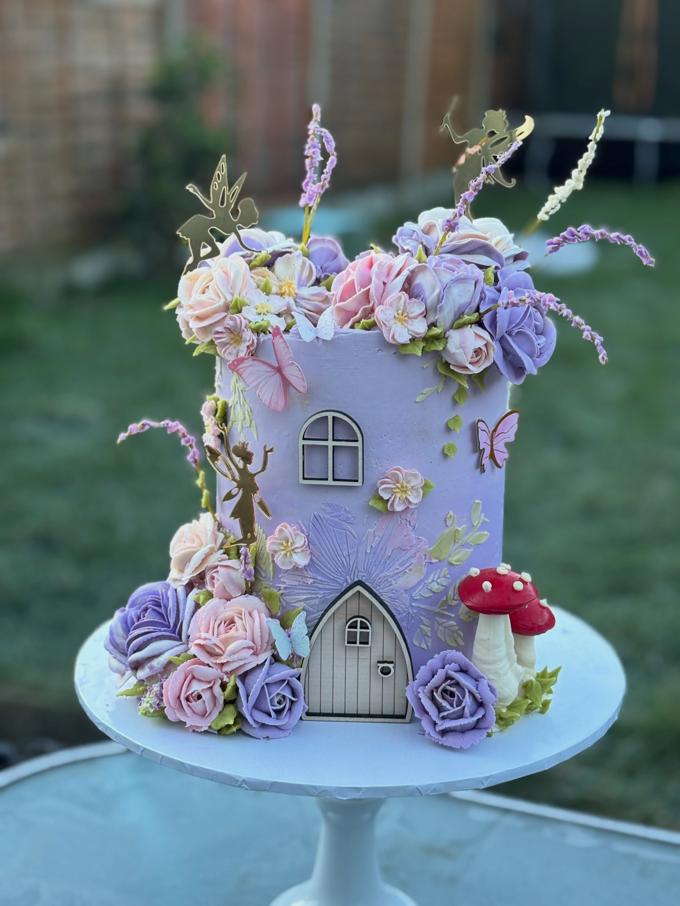

Wedding cakes & bouquets
Romantic little blooms for your biggest day. A beautiful detail, made to be shared.
Explore the collection

Floral cupcake bouquets, wedding and celebration cakes,
lovingly created in Birmingham for occasions across the Midlands.
A rose, a ruffle, a tiny petal. Every hand-piped buttercream flower brings a little of nature’s beauty to something delicious. From a thoughtful gift to a wedding centrepiece, let’s create a cake that feels like you.
Let’s create something beautifulA beautiful starting point for your celebration. Explore the collection, then tell me what you have in mind.
Romantic little blooms for your biggest day. A beautiful detail, made to be shared.
Explore the collectionA bouquet with a delicious secret. Delicate buttercream flowers for someone special.
Explore the collectionA centrepiece for the moments that deserve a little more magic.
Explore the collection
I create floral cakes and cupcake bouquets in Birmingham, bringing a love of flowers to the celebrations that matter to you.
For me, it’s the little details that make something personal: a favourite flower, a soft colour palette, or a meaningful occasion. Each buttercream bloom is piped by hand and brought together in a design made for your moment.
Whether you’re choosing a thoughtful gift or planning a wedding in the Midlands, I’d love to hear your ideas.
A little about meA birthday, a wedding, or a just-because gift. Tell me the date, your ideas, and who we’re celebrating.
We’ll discuss colours, flavours and all the little details, then confirm a design and quote together.
Once the details and arrangements are agreed, all that’s left is to look forward to your celebration.
Explore the studio on Instagram, from buttercream details to finished celebrations.
From the Baked By Adeela portfolio. See the latest posts on Instagram.
Let’s bring your favourite flowers, flavours and colours together.
Enquire about your occasion